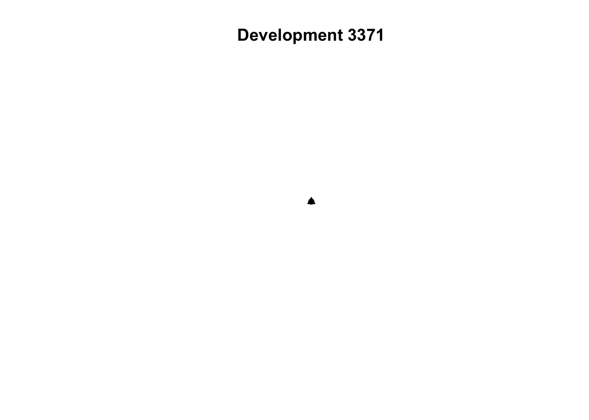

From permits to developments: how the São Paulo building-permit pipeline works
A plain-language walkthrough with worked parcel examples
Published
September 26, 2026
What this document shows
São Paulo publishes building permits as individual records. This repository turns those records into a dataset of developments. One development groups every permit that refers to the same construction project.
The pipeline reproduces the published version 3 of the dataset. Cleaning matches the version 3 file permit by permit. Development matching matches it development by development. A fresh end-to-end run gives the same totals: 11,735 developments and 914,401 housing units. One development changes match type because the geocoding service moved one address slightly. Section 5 records each check.
The rest of this document walks through the pipeline the way data flows. Each stage states what enters, what leaves, and why the step exists. Four worked examples trace real parcels through the machinery. The final section lists six questions that only the dataset authors can settle.
The raw material
The municipality posts a dated archive of permit records on its PDE monitoring portal. The pipeline records the archive URL, the download time, and a SHA-256 checksum in data/raw/source.yml. A release pins one dated URL in config/source.yml so anyone can verify the exact bytes later.
The version 3 archive dates from 2025-04-22. Its CSV holds one row per permit with the permit number, a free-text description, the approval unit, the land registry number (SQL), land and building areas, block and unit counts, dates, the address, the district, and municipal coordinates.
The pipeline in five stages
The targets pipeline has nine steps. They form five stages. Each stage feeds the next one, and targets reruns only stages whose inputs changed.
Code
flowchart LR A[Fetch<br/>dated archive] --> B[Read<br/>raw CSV] B --> C[Clean<br/>27,009 permits] C --> D[Geocode<br/>26,886 located] D --> E[Group and summarize<br/>11,735 developments] E --> F[Write<br/>alvaras.parquet]
flowchart LR
A[Fetch<br/>dated archive] --> B[Read<br/>raw CSV]
B --> C[Clean<br/>27,009 permits]
C --> D[Geocode<br/>26,886 located]
D --> E[Group and summarize<br/>11,735 developments]
E --> F[Write<br/>alvaras.parquet]
Figure 1: The five stages. Row counts come from the version 3 run.
Fetch and read
The pipeline resolves the source URL, downloads the zip, and writes the manifest. The reader opens the single permit CSV inside the zip and checks that every expected column is present. If the municipality renames a column, the pipeline stops here with the missing names.
Clean
Cleaning standardizes 27,009 permit records. It renames columns, parses dates and numbers, and derives classifications from the free-text description. Each permit gets an approval type such as approval, execution, or conclusion. It also gets flags for new construction, social housing categories, and corrections.
Addresses need special care. The same street appears with and without its type prefix, as in “R HEITOR PENTEADO” and “HEITOR PENTEADO”. Within each subprefecture, every spelling takes the address of the most recent permit. This step removes no permits except exact duplicates and rows without a permit number.
Geocode
Permits with municipal coordinates keep them. The 254 permits without coordinates go through a filter. The pipeline geocodes only addresses with a street name and a number. It skips kilometre markers and placeholders. In version 3, 131 permits qualified and 123 did not. The 131 addresses went to the ArcGIS service. A local cache stores each answer with its match score and match type, so reruns cost nothing.
The located permits total 26,886. The pipeline warns about any point outside São Paulo and about any match coarser than street level.
Group and summarize
Grouping decides which permits belong to the same development. Two permits match when they share a land registry number, share a land area, and sit within 100 metres. The combination sets the match type. Type 1 means all three agree. Types 2 to 4 mean two agree. Type 5 means only the registry number agrees. Partial matches upgrade to type 1 when the building area or the unit count also agrees.
Each permit joins one development. Perfect matches take priority, then partial matches from type 2 down, then registry-only groups. Permits in no group stand alone. Lots split into sub-lots get a separate treatment: the pipeline summarizes each sub-lot first, then adds the sub-lots up. Section 4 traces four cases through this machinery.
The published file keeps only developments with both approval and execution permits and more than five units. It holds 11,735 developments in EPSG:31983 GeoParquet format.
Worked examples
The cells below read the version 3 snapshots. Expand any cell to see the code.
Table 1: Permits surviving each stage in the version 3 run.
stage
rows
Cleaned
27009
Located
26886
Developments
11735
A perfect match
Development 3371 joins two permits on Rua Heitor Penteado. Both carry land registry number 08134103979 and land area 1,815 m². They sit at the same address, well within 100 metres. All three signals agree, so the pair earns match type 1.
The map below shows the two permit points and the development point. The development takes the most recent permit’s location.
Code
dev_3371 <- developments[developments$id_empreendimento_num ==3371, ]plot(sf::st_geometry(permits_3371), pch =16, col ="grey40", main ="Development 3371")plot(sf::st_geometry(dev_3371), pch =17, col ="black", add =TRUE)

Figure 2: Development 3371. Two permit points and the development point at Rua Heitor Penteado 1645.
A parcelamento
Development 5721 covers 34 permits on one lot at Rua 04 4, more permits than any other parcelamento in the file. The lot contains sub-lots with different land areas. The pipeline summarizes each sub-lot separately, then adds areas, blocks, and units across sub-lots. The result spans 161,478 m² with 6,211 units.
Table 3: Sub-lots of development 5721. Each land area forms one sub-lot.
land_area
permits
11
9698.4
3
15
15328.81
3
1
3049.45
2
2
4770.57
2
4
5697.21
2
5
6804.71
2
6
7472.97
2
7
7705.41
2
8
8915.62
2
9
8990.74
2
A geocoded address
The municipality supplied no coordinates for 254 permits. The cache holds 67 distinct addresses covering the 131 permits that qualified. Most answers land on an address point or street segment. Five answers land coarser, on a street or town centroid. The table below lists them. The pipeline keeps them but warns.
Table 4: Coarse ArcGIS matches kept by the pipeline with a warning.
endereco_key
geocode_tipo
geocode_score
45
ES DO EMBU-GUACU 10604 SAO PAULO SP
Locality
84.51
27
ES ECOTURISTICA DE PARELHEIROS 6060 SAO PAULO SP
StreetName
89.50
29
ES ECOTURISTICA DE PARELHEIROS 6170 SAO PAULO SP
StreetName
89.50
10
DO CONTORNO 60 SAO PAULO SP
StreetName
96.86
17
R DR JOSE LEAL MASCARENHAS 100 SAO PAULO SP
StreetName
97.00
A permit left out
Permit 2010.28.961-00 approves and executes a new building at Rua Malmequer do Campo 1155 on a 20,793 m² lot. Its land registry field is empty. The matcher treats all 102 permits without a registry number as sharing one lot, and a later join drops them from the developments. The permit survives cleaning and locating but never reaches the published file.
Replication check
Regression tests rebuild version 3 from its inputs and compare column by column. The full test suite passes with 30 successes and no failures.
Code
fresh <- sfarrow::st_read_parquet("../outputs/alvaras.parquet")checks <-data.frame(check =c("Cleaning reproduces the cleaned snapshot","Matching reproduces the final snapshot","Fresh run totals match version 3","Fresh run coordinate system matches" ),outcome =c("Exact","Exact",paste0(nrow(fresh), " developments, ", sum(fresh$n_unidades, na.rm =TRUE), " units"),paste0("EPSG:", sf::st_crs(fresh)$epsg) ))knitr::kable(checks)
Table 5: Replication checks and their outcomes.
check
outcome
Cleaning reproduces the cleaned snapshot
Exact
Matching reproduces the final snapshot
Exact
Fresh run totals match version 3
11735 developments, 914401 units
Fresh run coordinate system matches
EPSG:31983
The fresh run differs from the snapshot in exactly one development’s match type. ArcGIS placed one address slightly differently than in version 3, and the 100-metre rule flipped that pair. Totals, units, and the coordinate system match.
Questions for the dataset authors
The pipeline keeps six version 3 rules unchanged so the output reproduces the published file. Each rule below needs an author decision before the next release changes it.
Permits dropped by the parcelamento join. The script overwrites a permit flag with a lot-level flag, then joins on every shared column. Permits whose flag changed find no match and fall out. In version 3 this removes 32 approval and execution permits across 17 lots that also hold a plano integrado permit. Should those permits stay in their developments?
Permits without a land registry number. The matcher treats all 102 as sharing one lot, and the same join drops them. Should they match by location only, or should the pipeline exclude them explicitly?
Correction filter in the plano integrado count. The correction filter sits outside the selector, so the count ignores it. This changes nothing in version 3. Should the filter apply?
Choice among partial matches. The comment says a permit in several partial groups joins the one with more units. The code compares the permit’s own units across groups, which always tie, so the permit joins the lowest partial type. Which rule do the authors want?
Sub-lot order in parcelamentos. Sub-lots sort by land area, so dates, registry numbers, and addresses come from the smallest sub-lot rather than the most recent permit. Should the most recent permit win instead?
Geocoding policy. The pipeline drops 123 permits without usable addresses and keeps 10 matches placed at a street or town centroid, one outside São Paulo. Should centroid matches stay or go? Storing free-service results may also breach the provider’s terms, so publishing coordinates may need an API key.
Reproduce it yourself
Two commands rebuild the dataset. Rendering this document needs the benchmark files in data/benchmark, which the repository excludes from Git.
Code
R-e"renv::restore()"R-e"targets::tar_make()"
The pipeline definition lives in _targets.R. Its functions live in R/. Tests live in tests/testthat, with regression tests that need the local benchmarks. Reference geography sits in data/reference. Raw downloads, intermediate data, the geocoding cache, and generated outputs stay out of Git.